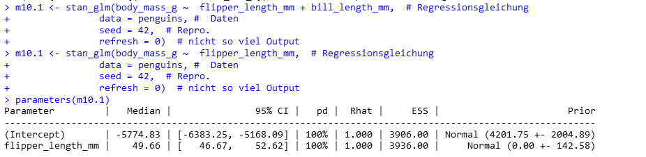

library(tidyverse)
#library(easystats)
#library(rstanarm)
data("msleep", package = "ggplot2")
msleep1 <-
msleep |>
mutate(av_high = case_when(awake > median(awake) ~ 1,
awake <= median(awake) ~ 0))
msleep2 <-
msleep1 |>
mutate(uv_high = case_when(sleep_rem > median(sleep_rem) ~ 1,
sleep_rem <= median(sleep_rem) ~ 0))
msleep2 |>
count(uv_high)23 Frequently Asked Questions (FAQ)
23.1 Datenanalyse allgemein
23.1.1 Bitte meinen Code durchsehen
FRAGE: Können Sie bitte mal meinen R-Code durchsehen, ob alles passt?
ANTWORT: Das hört sich an wie “bitte schreiben Sie mir meinen Code so, dass er passt”. Sie verstehen sicher, dass solche Hilfe zu weit ginge.
Aber helfen kann ich Ihnen schon etwas. Sagen Sie mir ein konkretes Problem oder eine konkrete Frage, dann gebe ich Ihnen eine konkrete Antwort. Bitte formulieren Sie Ihre Frage so, dass ich gut helfen kann: Knapp, präzise mit allen Infos aber ohne unnötige Details. S. auch ERBIE.
23.1.2 RStudio Cloud stürzt ab, was tun?
FRAGE: Zudem wollte ich sie gerne noch fragen, wie ich in der Klausur verhindern kann, dass mein R Cloud mir diese Fehlermeldung anzeigt. Diese tritt vermehrt auf, wenn ich einige Minuten nichts in der R Cloud bearbeite. Danach erscheint das Fenster sehr oft nacheinander und es ist teilweise nicht mehr möglich weiterzuarbeiten weil die Meldung immer wieder auftritt.
ANTWORT: Probieren Sie folgende Maßnahmen:
Ist der Speicher in RStudio Cloud aufgebraucht? Das kann zu Abstürzen führen. Löschen Sie Objekte und ent-laden Sie R-Pakete, um Speicher freizugeben.
Wenn Sie mehr Speicher benötigen, könnten Sie (ggf. nur für einen Monat) ein kostenpflichtiges Abo abschließen, welches mehr Speicher enthält.
Verringern Sie die Zeit, in der Sie RStudio Cloud nicht nutzen (die Idle-Time).
Versuchen Sie, weniger speicherintensive Berechnungen durchzuführen.
Weichen Sie auf RStudio Desktop aus.
23.2 Inferenzstatistik und Modellierung (QM2)
23.2.1 Probeklausur?
FRAGE: Wo finde ich eine Probeklausur für QM2?
ANTWORT: Dieser Tag stellt Fragen einer Probeprüfung zusammen.
23.2.2 Wie bereite ich mich gut auf die Prüfung vor?
FRAGE: Wie bereite ich mich gut auf die Prüfung vor?
ANTWORT: Hier finden Sie Tipps zur Prüfungsvorbereitung.
23.2.3 Intercept?
FRAGE: Wenn man ‘(Intercept)’ benutzt, welche Anführungszeichen sind die richtigen? Bei verschiedenen Anführungszeichen, also ’ oder ` oder ´ kommen entweder keine oder sogar verschiedene Ergebnisse raus.
ANTWORT: Normalerweise ist innerhalb von R-Befehlen aus dem Tidyverse keine Anführungsstriche für Spaltennamen nötig. Wenn es allerdings ein “verbotener” Name ist, muss man aufpassen. (Intercept) ist so ein verbotener Variablenname. Warum verboten? Ein “braver” Variablenname (in R) muss mit einem Buchstaben beginnen und darf keine Sonderzeichen ((, {, #, etc.) enthalten. Hat man aber einen an sich unerlaubten Variablennamen, so kann man den trotzdem verwenden, wenn man ihn mit Backticks (`) umgibt, also wie in \(Intercept)\). Doppelte und einfache Anführungsstriche sind in R übrigens beide okay, wenn man etwa einen String (Text) auszeichnen will, aber im Rahmen von Tidyverse nicht nötig für Variablennamen.
23.2.4 Prädiktoren vorher zentrieren?
FRAGE: Woher weiß ich, dass ich die Prädiktoren vorher zentrieren muss? Kann man das aus der Aufgabenstellung irgendwie herauslesen? Z.B. wie bei Tutorium Aufgabe 10.1 d).
ANTWORT: Es gibt mehrere Gründe, Variablen zu zentrieren, dazu zählen 1) bessere Interpretation des Intercepts, 2) bessere Interpretation von Interaktionseffekten, 3) Verringerung von Kollinearität. Die Steigung (beta 1) verändert sich (fast immer) aber nicht durch das Zentrieren, ebenso wie R-Quadrat.
23.2.5 Dichotomisierung
FRAGE: Bei der Bearbeitung der Prüfung heute ist ein Fehler aufgekommen, den ich bis jetzt nicht verstehe. Deshalb war es auch für mich nicht möglich die Aufgabe zu bearbeiten. Die AV high Aufteilung in die Werte 0 und 1 (0 = AV <= median (AV)) (1 =AV > median(AV) hat geklappt. Die UV high Aufteilung in die Werte 0 und 1 (0 = UV <= median (UV)) (1 =UV > median(UV) hat dabei aber nicht geklappt. Anstatt die Werte 0 und 1 bei der neuen UV_high Spalte zu bekommen, kommen nur Nas raus. Auch mit dem Befehl drop_na hat es nicht geklappt. Dies habe ich nicht nur mit dem RStudio auf meinem Computer versucht sondern auch über die Cloud über mein IPad. (Bei beiden Geräten kam es zuvor noch nie zu Problemen) Hier mein R-Code:
ANTWORT: Sie haben nicht die fehlenden Werte ausgeschlossen. Wenn Sie die fehlenden Wert ausschließen, dann klappt die Dichotomisierung (die Aufteilung einer metrischen Variablen in eine binäre):
23.2.6 Bin ich im Toleranzbereich?
FRAGE: Ich habe meine Lösungswege mit Ihren abgeglichen und finde keinen bedeutenden Unterschied. Dennoch erhalte ich andere Ergebnisse, welche nicht im Toleranzbereich liegen. Um das nochmals zu überprüfen, habe ich Ihre Lösungswege 1:1 in mein RStudio übertragen, aber auch dann erhalte ich nicht die angegebene Lösung.
ANTWORT: Es sollte ein Modell berechnet werden mit z-transformierten Variablen. Für die UV war der ROPE anzugeben. Leider haben Sie vergessen, die Daten zu z-transformieren.
Hier ist das Modell ohne z-Transformation:
Loading required package: RcppThis is rstanarm version 2.32.1- See https://mc-stan.org/rstanarm/articles/priors for changes to default priors!- Default priors may change, so it's safest to specify priors, even if equivalent to the defaults.- For execution on a local, multicore CPU with excess RAM we recommend calling options(mc.cores = parallel::detectCores())# Attaching packages: easystats 0.7.4 (red = needs update)
✖ bayestestR 0.16.0 ✔ correlation 0.8.7
✔ datawizard 1.1.0 ✖ effectsize 1.0.0
✖ insight 1.3.0 ✖ modelbased 0.11.0
✖ performance 0.13.0 ✖ parameters 0.25.0
✔ report 0.6.1 ✔ see 0.11.0
Restart the R-Session and update packages with `easystats::easystats_update()`.library(dplyr)
penguins <- read.csv("https://vincentarelbundock.github.io/Rdatasets/csv/palmerpenguins/penguins.csv")
m1 <- stan_glm(bill_length_mm ~ year, data = penguins, refresh = 0)
rope(m1)Hier ist das Modell mit z-Transformation:
p2 <-
penguins |>
select(bill_length_mm, year) |>
standardise()
m2 <- stan_glm(bill_length_mm ~ year, data = p2, refresh = 0)
rope(m2)Der Wert von m2 findet sich in der Musterlösung. Man beachte, dass sich die Rope-Werte von m1 und m2 deutlich unterscheiden.
23.2.7 Andere Ergebnisse trotz gleichen Befehls und set.seed?
FRAGE: ich habe bei fast allen Aufgaben, die ich löse, dass Problem, dass mein Ergebnis stark von der Lösung abweicht, selbst bei exakt gleichem Code wie in der Musterlösung. Leider ist die Abweichung so stark, dass ich nicht mal mehr im Toleranzbereich bin. Teilweise kommen extrem andere Ergebnisse raus. Wie ist dieses Problem zu lösen? Ich bearbeite die Aufgaben in der R Cloud und habe die Pakete tidyverse, easystats und rstanarm geladen. Zudem habe ich die Pakete geupdated, sodass ich hier nicht weiter weiß.
Meine Lösung:
penguins <- read_csv("https://vincentarelbundock.github.io/Rdatasets/csv/palmerpenguins/penguins.csv")Rows: 344 Columns: 9
── Column specification ────────────────────────────────────────────────────────
Delimiter: ","
chr (3): species, island, sex
dbl (6): rownames, bill_length_mm, bill_depth_mm, flipper_length_mm, body_ma...
ℹ Use `spec()` to retrieve the full column specification for this data.
ℹ Specify the column types or set `show_col_types = FALSE` to quiet this message.m10.1 <- stan_glm(body_mass_g ~ flipper_length_mm, # Regressionsgleichung
data = penguins, # Daten
seed = 42, # Repro.
refresh = 0) # nicht so viel Output
parameters(m10.1)
ANTWORT: Tatsächlich ist es so, dass es trotz gleichem Wert bei set.seed() Abweichungen nicht ausgeschlossen werden können. Hintergrund ist, dass verschiedene Betriebssysteme oder weitere, im Hintergrund involvierte Software in unterschiedlichen Versionen zu Abweichungen führen können. In Ihrem Fall ist der Wert aber innerhalb des Toleranzbereichs. Im Zweifel werden Sie mit einigem Probieren Ihren Wert nach der Prüfung wiederholen können und so ggf. dem Prüfer nachweisen können, das Ihr Ergebnis statthaft, sogar, wenn es nicht im Toleranzbereich wäre.
Hier ist die von der Studentin angesprochene Musterlösung:
Und hier ist der Toleranzbereich (vgl. ?sec-toleranz) für den Intercept (Achsenabschnitt):
library(prada)
is_in_tolerance(asis = 5774.83, # Ihr Wert
tobe = 5787.34917, # Referenzwert
tol_rel = .05, # relative Toleranz
tol_abs = .05 * sd(penguins$body_mass_g))[1] TRUEWie man sieht, ist is_in_tolerance gleich TRUE.
Auch der Punktschätzer für die UV ist im Toleranzbereich:
is_in_tolerance(asis = 49.66, # Ihr Wert
tobe = 49.71739, # Referenzwert
tol_rel = .05, # relative Toleranz
tol_abs = .05 * sd(penguins$body_mass_g))[1] TRUEAlso alles in Ordnung. Sie brauchen sich keine Sorgen zu machen, die Abweichung ist im Toleranzbereich.
23.2.8 Welche Themengebiete werden in der Prüfung besonders behandelt?
FRAGE: Welche Themengebiete werden in der Prüfung besonders behandelt?
ANTWORT: In den Prüfungen werden alle Themengebiete abgefragt, die in der Vorlesungbehandelt wurden. Es gibt keine speziellen Schwerpunkte, die besonders behandelt werden. Es ist ratsam, sich auf alle Themengebiete vorzubereiten. Tipp: Schwerpunkte im Unterricht spiegeln sich oft in den Prüfungen wider.
23.2.9 RStudio in der Prüfung?
FRAGE: Wird R Studio noch eine Rolle spielen, z. B. indem wir Code oder Pseudocode schreiben müssen, oder liegt der Fokus komplett auf Theorie?
ANTWORT: Bei einer “Papier-und-Kugelschreiber-Klausur” spielt RStudio keine Rolle. Es wird also kein Code geschrieben. Es wird aber durchaus vorkommen, dass Sie in der Klausur R-Code lesen und interpretieren müssen.
23.2.10 Welche Art von Fragen?
FRAGE: Welche Art von Fragen können wir erwarten in der QM2-Prüfung? (z. B. Multiple Choice, offene Fragen oder mathematische Herleitungen)
ANTWORT: Die Prüfung wird zu einem großen Teil aus Multiple-Choice-Fragen bestehen. Es wird aber auch offene Fragen geben. Mathematische Herleitungen sind nicht zu erwarten. Hingegen sind einfache Berechnungen (die mit einem kaufmännischen Taschenrechner durchgeführt werden können) durchaus möglich.
23.2.11 Vorbereitung?
FRAGE: Gibt es bestimmte Übungsaufgaben oder Materialien, die Sie empfehlen, um sich gezielt auf die Theorie-Klausur in QM2 vorzubereiten?
ATNWORT: Hier finden Sie eine Sammlung von Fragen, die in einer Probeprüfung gestellt wurden. Diese Fragen können Ihnen helfen, sich gezielt auf die Prüfung vorzubereiten.
Darüber hinaus sollten Sie die theoretischen Inhalte des Skripts kennen sowie alle Themen, die im Unterricht behandelt wurden.
Zwar ist es formal kein Bestandteil der Prüfung, die Begleitliteratur zu lesen, aber es kann hilfreich sein, um den Stoff besser zu verstehen.
23.2.12 Lückenlose Vorbereitung?
FRAGE: Ich befinde mich gerade mitten in der Vorbereitung für meinen Drittversuch des Moduls Quantitative Methoden II neben dem Besuchen der Vorlesungen und Übungen über das Semester arbeite ich bisher hauptsächlich mit ihrem Skript und den dort gegebenen Pen and Paper Aufgaben. Wenn ich das Skript durchgearbeitet habe möchte ich mich des weiteren den Übungsaufgaben und Inhalten von Bourier widmen. Da es sich zeitgleich zum Drittversuch um meine letzte Prüfung vor der Bachelorarbeit handelt möchte ich mich möglichst lückenlos auf die Prüfung vorbereiten, damit keine Möglichkeit besteht die Prüfung nicht zu bestehen. Natürlich können sie keine genauen Inhalte der kommenden Prüfung geben, ich wollte mich trotzdem versichern, dass ich keine Aspekte des Kurses auslasse, die ebenfalls prüfungsrelevant sind.
ANTWORT: Die Aufgaben im Skript sind am wichtigsten. Dazu sollten die Inhalte, auf die sich die Aufgaben beziehen, gut erarbeitet sein. Darüber hinaus empfiehlt es es sich, sich Varianten zu den eingestellten Aufgaben zu überlegen, z.B. mit anderen Zahlen oder leichten inhaltlichen Variationen. Wichtig ist, die Aufgabe selber zu lösen und sich dann erst die Musterlösung anzuschauen. Viel Erfolg!
23.2.13 Anmeldung in Moodle nicht möglich?
FRAGE: Ich kann mich nicht in Moodle anmelden. Es erscheint folgender Hinweis bzw. folgende Fehlermeldung: “Leider gibt es derzeit in der Moodle App Probleme mit der Einschreibung in Kurse. Wir suchen eine Lösung für das Problem. Solange schreiben Sie sich bitte über einen Browser (auch am Handy möglich) in Ihre Kurse ein. Bitte entschuldigen Sie die Unannehmlichkeiten.”
ANTWORT: Dieser Hinweis betrifft nur die Anmeldung via App auf dem Handy. Die Anmeldung über den Browser (Computer) sollte problemlos funktioneren, s. Abbildung 23.1.